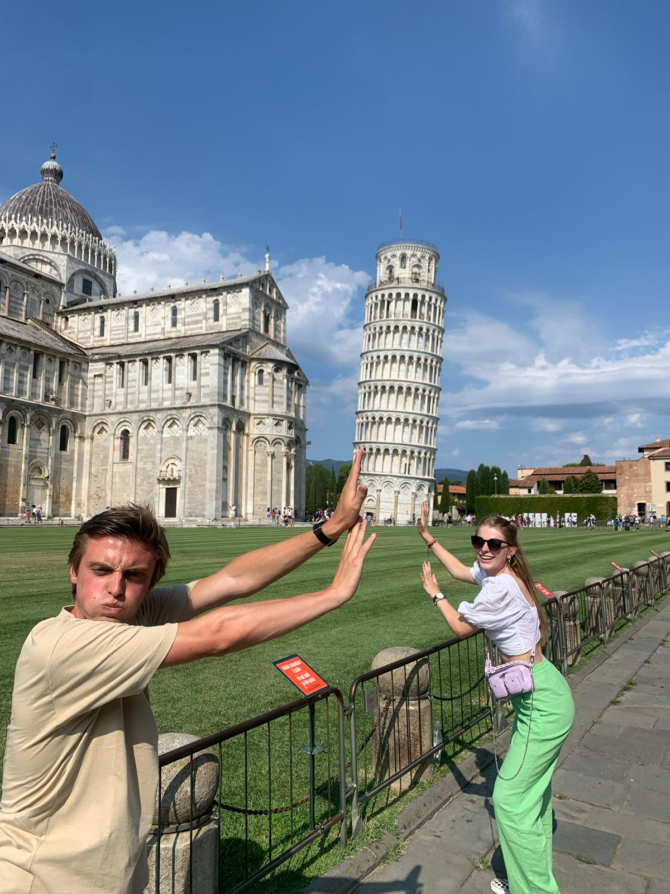
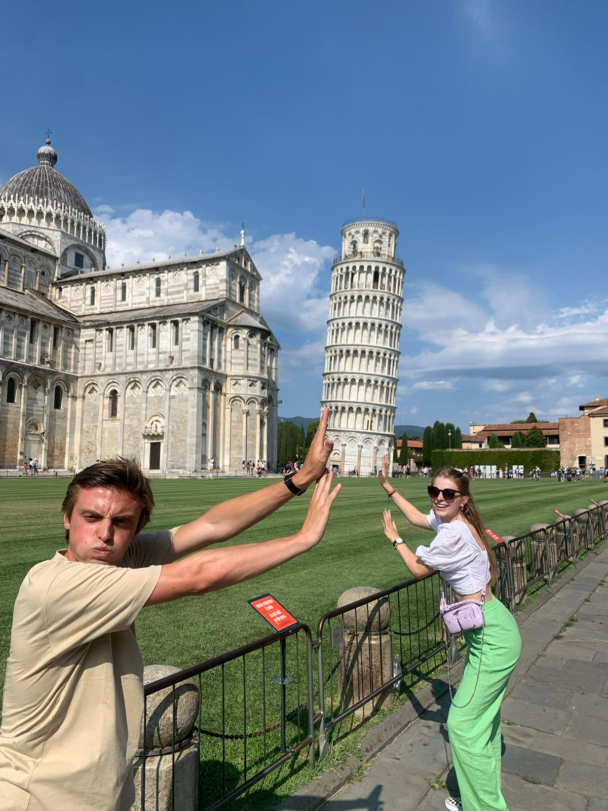

Bezochte steden in Toscane
Milaan
Winkelen, winkelen en nog eens winkelen. De eerste associatie die de meeste Nederlanders, en dan met name vrouwen, met de Italiaanse stad Milaan hebben is Milaan als winkelparadijs. Milaan is de thuisbasis van een groot aantal belangrijke modemerken zoals Prada, Armani, Versace, Valentino, Trussardi, Moschino, Zegna en Dolce & Gabbana. Niet voor niets dat deze merken ook nadrukkelijk aanwezig zijn in de belangrijkste winkelstraten van Milaan. Het gevoel voor mode zie je niet alleen in de winkels, maar ook in het straatbeeld. Een opvallend groot deel van de mensen die je in Milaan op straat rond ziet lopen is duidelijk modebewust. Dat zie je terug in kleding, schoenen en kapsels. Milaan is echter zoveel meer dan mode en winkelen. Het is vooral ook een echte stad waar altijd wel wat gebeurt of te beleven valt. Milaan is een stad die haar wortels ergens in de zesde eeuw voor Christus heeft en in de loop der jaren uitgegroeid is tot een van de grootste en machtigste steden van Italië. Op het gebied van cultuur, sport en economie telt Milaan serieus mee in Italië. Zoals het een grote Italiaanse stad betaamd heeft Milaan uiteraard ook op culinair gebied een aantal eigen specialiteiten, zoals de coteletta alla milanese en de felgekleurde risotto alla milanese. Voor wie Milaan wil bezoeken en niet (alleen) geïnteresseerd is in winkelen en mode heeft de stad dan ook voldoende te bieden. De vele kerken, musea en andere bezienswaardigheden zorgen ervoor dat je je niet hoeft te vervelen als je een paar dagen naar Milaan gaat. De redelijke compactheid van de stad en het uitstekende openbare vervoer zorgen ervoor dat je tussentijds ook nog de tijd hebt om te genieten van een goed glas wijn, een aperol spritz of een lekkere kop koffie.
Lucca
Lucca is een middelgrote stad in het noordwestelijke deel van Toscane. Het is de hoofdstad en de grootste van de provincie Lucca. Het is een oude stad die al ver voor Christus is gesticht. Lucca komt voor het eerst voor in de geschiedenisboekjes in de derde eeuw voor Christus. Dit was de plaats waar Sempronius naartoe vluchtte nadat hij verslagen was door Hannibal. Aan het stratenplan van Lucca is goed te zien dat de stad gesticht is door de Romeinen. Het stratenplanen de verschillende bezienswaardigheden in Lucca zorgen ervoor dat er veel overeenkomsten te vinden zijn met nabij gelegen Florence. Lucca wordt daarom ook wel eens gezien als het kleinere broertje van Florence. Bijzonder is dat zo goed als alle bezienswaardigheden in Lucca te vinden zijn binnen de oude stadsmuren. De stad is altijd omringt geweest met stadsmuren. Al in de tweede eeuw was er een omwalling rond de stad.
Lucca staat bekend om zijn stadsmuren. Het is één van de weinige steden ter wereld waarvan de stadsmuren in zijn geheel intact zijn gebleven. De stadsmuren lenen zich perfect voor een prachtige wandeling of fietstocht. Op de muren zijn zelfs enkele horecagelegenheden te vinden. Met name in de zomermaanden zijn de stadsmuren gevuld met joggers, wandelaars en fietsers.Lucca is altijd ommuurd geweest, de oudste stadsmuren stammen uit de tweede eeuw voor Christus. Deze aarden wallen zijn door de eeuwen heen vervangen door muren die later weer verplaatst werden. Je kunt de stad binnenlopen of rijden door één van de zes stadspoorten. Bijzonder is wel dat de stadsmuren van Lucca nooit dienst hebben moeten doen als verdedigingsmuren. Wel hebben de muren de stad beschermd tegen een overstroming. De muur heeft een totale lengte van ongeveer vier kilometer.
Een van de leukste plekjes in Lucca is het Piazza dell’Anfiteatro. Op de plaats van het huidige plein was vroeger een Romeins amfitheater te vinden. Door de eeuwen heen was de plek van het theater volledig volgebouwd, maar in de negentiende eeuw werden deze gebouwen gesloopt en werd op de fundamenten van het theater verschillende winkels en huizen gebouwd. Doordat de architect rekening heeft gehouden met de vorm van het vroegere theater ontstond er een elliptisch plein. Het plein was bedoeld als het marktplein van Lucca. Aan het plein zijn tegenwoordig voornamelijk horeca gelegenheden te vinden. In de zomermaanden staat een groot deel van het plein vol met terrassen. Het is dan ook een heerlijke plek om in alle rust bij te komen. Het plein kan alleen bereikt worden door onder één van de vier arcades door te gaan.
 


Pisa
De Toren van Pisa is zonder twijfel het beroemdste gebouw van Pisa en misschien wel van heel Italië. De toren van Pisa ook wel bekend als de scheve toren is van oorsprong de campagnile of klokkentoren van de Duomo Santa Maria Assunta. De bouw van de toren startte in de tweede helft van de twaalfde eeuw. Niet al te lang na de bouw van de toren begon hij al scheef te staan. Omdat men hierna recht omhoog bleef bouwen helt de toren niet alleen maar is hij ook krom. De toren is in een verloop van ongeveer tweehonderd jaar gebouwd in verschillende fases. Dit heeft ervoor gezorgd dat tussentijds de grond heeft kunnen inklinken en de toren niet om is gevallen. Als de toren in één keer was gebouwd was hij omgevallen. Om het schuine deel van te compenseren werd aan één zijde meer mortel gebruikt waardoor de toren wat krom is. In de loop der tijd zijn er meerdere pogingen ondernomen om de toren te behoeden van verder verzakken.
De kathedraal van Pisa of de Duomo Santa Maria Assunta ligt centraal op het Piazza dei Miracoli. Het is een middeleeuwse romaanse kathedraal uit de elfde eeuw in de typische Pisaanse stijl. Net als de Toren van Pisa helt de Kathedraal van Pisa. De buitenzijde van de kathedraal is bekleed met marmer en witte stenen. Opvalland aan de is de façade van de kathedraalDe kathedraal van Pisa is de enige bezienswaardigheid op het Piazza dei Miracoli dat gratis bezocht kan worden. Je moet echter wel een gratis kaartje ophalen bij de kassa in het Museo della Sinopie. De binnenzijde van de Duomo Santa Maria Assunta is gedecoreerd met wit en zwart marmer. Opvallend is de cassetteplafond. Het interieur van de kathedraal stamt uit de zestiende eeuw. Het oude interieur is verwoest tijdens een grote brand. Een van de weinige dingen die de brand overleeft heeft is de preekstoel. Op deze preekstoel zijn negen scénes uit het nieuwe testament te zien.